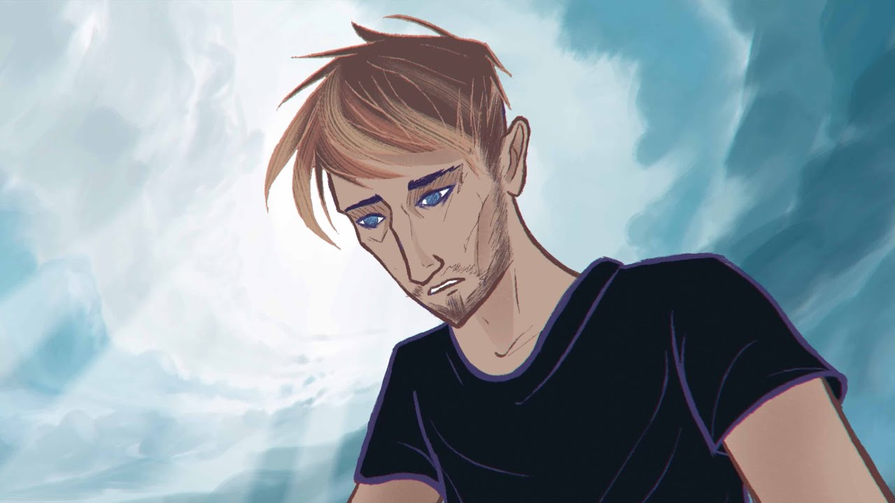

自己紹介
学籍番号：ZM19291
氏名：安藤宏起
埼玉県新座市で生まれました。3歳の時にふじみ野市に引っ越し、今もふじみ野に住んでいます。小学5年生の時に野球を始めて、中学３年生まで続けました。その後高校に入学して、ゴルフ部に入部。城西大学入学後も、ゴルフ部に所属しています。
今は、映像クリエイターになりたいと思っており、MV制作を行っています。
映像との出会い
僕が映像と出会ったきっかけは、YouTubeでみた１本の動画でした。

映像の美しさと、完璧な構成。11分05秒の動画が3分ほどのように感じるくらい引き込まれていきました。この動画を見た時に、自分も人引き込み、感動させられるクリエイターになりたいと思い、映像制作を始めました。
その後
その後、１年間かけて映像を独学で毎日学び、埼玉県児玉郡で行われた、ドローンコンテストで優勝。
今は、関東地方で活動するオーティスとのMV制作を行っています。
自分が手がけた作品はこちらから